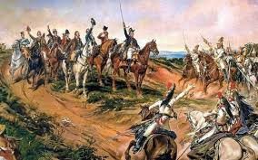
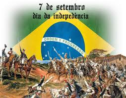

A indepenência do Brasil foi o processo histórico de separação entre Brasil e Portugal que se deu em 7 de setembro de 1822. Por meio da independência, o Brasil deixou de ser uma colônia portuguesa e passou a ser uma nação independente. Com esse evento, o país organizou-se como uma monarquia que tinha d. Pedro I como imperador.
A independência do Brasil tem uma grande ligação com a transferência da corte portuguesa para a colônia, em 1808. Os acontecimentos que se passaram no intervalo de tempo entre 1808 e 1822 levaram ao desgaste na relação entre a elite brasileira, sobretudo a do Sudeste, com o Reino de Portugal

O 7 de setembro é uma das datas comemorativas mais importantes do Brasil, justamente por abrigar um dos principais acontecimentos da nossa história: a nossa independência. Foi nesse dia, em 1822, que d. Pedro deu início a nossa trajetória como nação independente. Atualmente, o 7 de setembro é um feriado nacional que é marcado por comemorações públicas nas grandes cidades